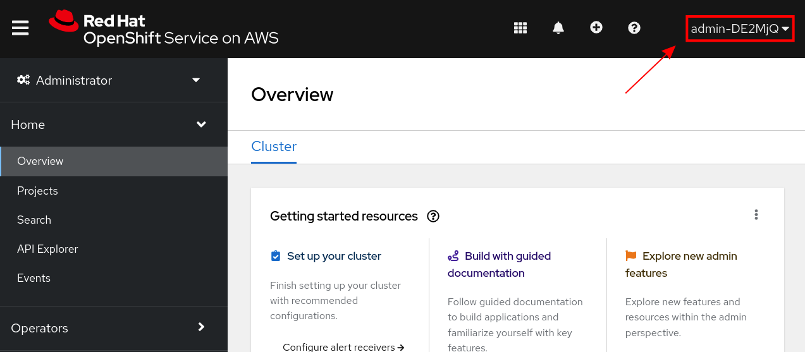

Configure OpenShift Authentication
| Under construction |
RHODS itself has not particular authentication settings.
Instead, it relies on how OpenShift’s authentication has been configured.
Therefore, it’s important to have at least one Identity Provider configured.
The steps below will walk you through 2 fairly simple Identity Providers to get you started.
Log in to console.redhat.com
Make sure you are logged in https://console.redhat.com/.
If not already done, go to https://console.redhat.com/ and log in with your Red Hat account. Once you are logged in, navigate to the OpenShift Section. (https://console.redhat.com/openshift). You should see your cluster(s).
Display detailed instructions:


Configure HTPasswd as an Identity Provider
This is a good option to use if you just need a single user, and/or if you want to start by creating an Cluster Administrator account.
That is how we will set it up:
Add the Identity Provider
-
Choose the Access control tab for your cluster
-
Select Identity providers
-
Click the Dropdown to Add identity provider and choose HTPasswd

-
On the next screen, keep all the defaults, including the suggested username and password
-
MAKE SURE TO SAVE THEM SOMEWHERE.
They will not be shown to you again.
-
click Add
Make this new user a Cluster-Admin
-
Select Cluster Roles and Access
-
Click Add User

-
Enter the name of the
admin-account that was created in the previous step, and choose Cluster-Admins
-
Click Add User
-
Confirm you can log into OpenShift
-
To confirm, Click on the blue button (Open Console).

-
A new tab will open, prompting you to choose an Identity Provider+ choose HTPasswd, the one we just added

-
On the next screen, enter the credentials that we were generated for you.

-
You should now be logged into the OpenShift Console
 -
If your screen looks like the above, kudos, you’ve just created an admin account for your openshift cluster
Configure GitHub as an Identity provider
| Under construction |
One of the fast-yet-simple way to grant OpenShift access to many users is to add a GitHub Identity provider to your OpenShift Cluster.
This requires you and them to have a GitHub account, but nothing else is needed.
If you’ve never done it before, the instructions below will guide you.